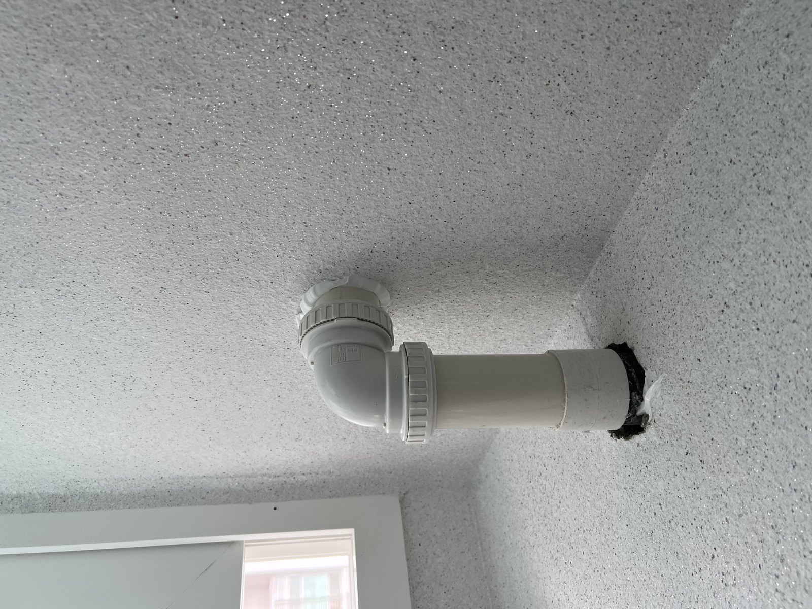
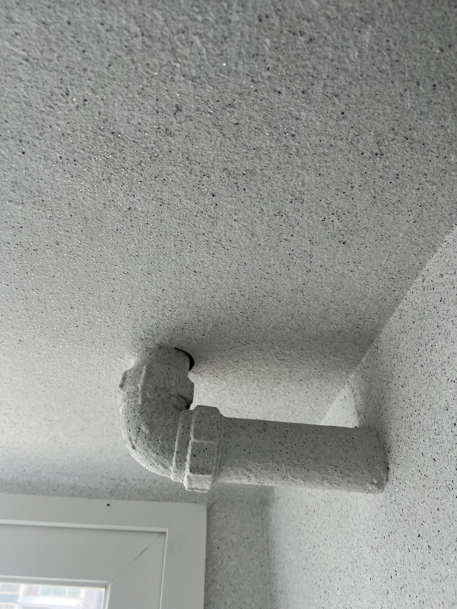

대전 무궁화아파트 배관 교체 — 연결부와 관통부를 기록했습니다

현장 앱에 배관 교체로 남아 있는 작업입니다. 새 배관의 연결부와 구조체를 통과하는 관통부를 교체 후 사진으로 확인했습니다.
교체 후 상태를 남긴 현장
현장 앱에 배관 교체로 기록된 작업입니다. 이번 기록에는 교체 후 새 배관이 설치된 상태와 각 연결 부위를 중심으로 담았습니다.
새 배관과 연결 부속
직선 배관과 꺾임 부속을 연결하고, 나사식 연결 부위가 맞물린 상태를 사진으로 확인했습니다. 배관 전체 방향과 연결부 위치가 한눈에 보이도록 남겼습니다.

구조체 관통부 확인
배관이 구조체를 통과하는 부분과 주변 마감 상태도 가까이에서 확인했습니다. 사진에는 배관 끝부분과 관통부가 함께 기록돼 있습니다.

누수 원인은 현장 확인이 먼저입니다
같은 배관 문제라도 원인과 교체 범위는 현장마다 다릅니다. 보이는 얼룩만으로 단정하지 않고 배관 위치와 연결 상태를 확인한 뒤 필요한 범위를 정합니다.